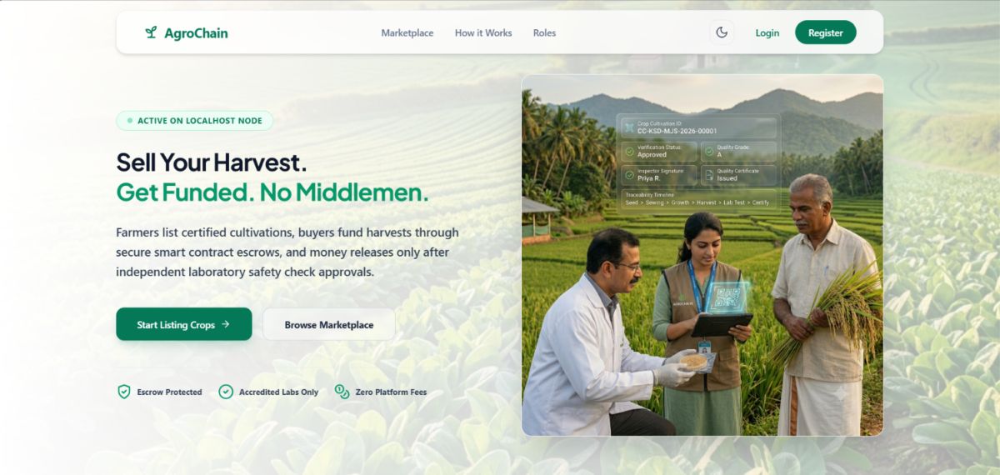

AgroChain: Decentralized Agricultural Supply Chain & Microfinance
A hybrid Web2/Web3 platform engineered to eliminate predatory middlemen in agricultural logistics, empowering farmers with immutable crop batch tracking, transparent buyer rating mechanisms, and escrow-backed peer-to-peer microloans.

Traditional agricultural supply chains are plagued by opaque pricing, fragmented intermediary layers, and zero authentic crop origin verification. Smallholder farmers frequently receive only a fraction of market retail value while bearing the entire production risk.
AgroChain combines high-speed Web2 usability with Web3 cryptographically verifiable guarantees: immutable crop batch provenance tracking, transparent buyer rating mechanisms, and escrow-backed peer-to-peer microloans.
token Smart Contract Layer
Written in Solidity and compiled via Hardhat. Manages crop batch minting as verifiable provenance tokens, stores immutable transaction histories, and enforces automated escrow releases.
api Web2 Application Layer
A Python/Flask RESTful backend serving dynamic pricing endpoints and PostgreSQL/SQLite indexing, paired with a React frontend communicating via MetaMask and Ethers.js.
Provenance Traceability
Unique batch identifiers allow buyers to verify harvest timestamp, geolocation, and transit checkpoints directly on the ledger.
P2P Microfinance Escrow
Smart contract escrow protocols release funds upon milestone verification, protecting lenders while offering fair interest rates.
Decentralized Reputation
On-chain rating mechanisms that prevent malicious rating inflation or fake review tampering through contract validation.
Integration verified with testnet RPC nodes, automated contract sweeps, and UI regression suites.
speed Challenge: Gas Fee Optimization & Latency
Writing every granular logistics milestone directly to the Ethereum blockchain incurred prohibitive gas fees and slow confirmation latency.
account_balance_wallet Challenge: Web3 Onboarding Complexity
Non-technical rural users were unable to navigate complex cryptographic wallet interfaces.